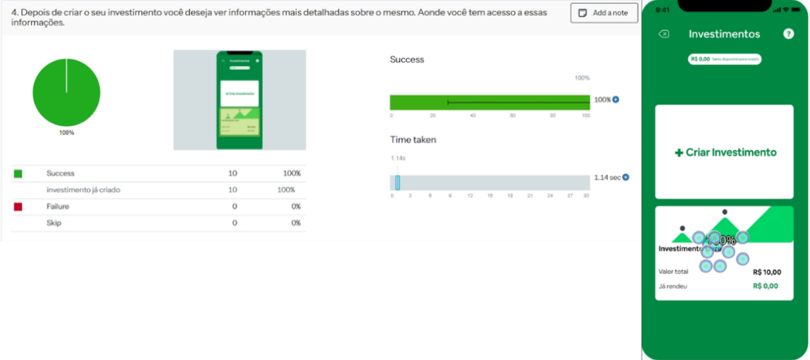
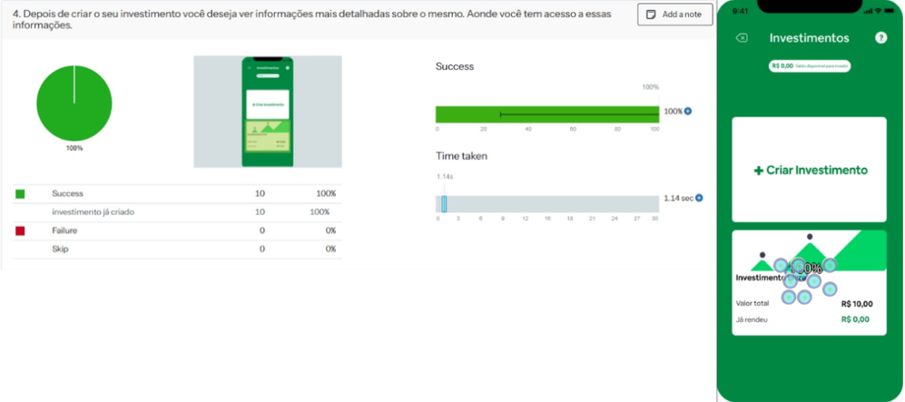

Avaliação Heurística
Nesta etapa, convidamos dois especialistas para realizar uma avaliação heurística de uma plataforma de educação financeira, com o objetivo de melhorar a qualidade da interação. Cada avaliador recebeu duas atividades definidas no modelo de tarefas: trilha de aprendizados e simular um investimento. Para cada tarefa, os avaliadores observaram as 10 Heurísticas de Nielsen em busca de possíveis problemas.
Foram identificados 10 problemas de usabilidade na interface.
- 10 Heurísticas de Nielsen
- 1. Visibilidade do estado do sistema
- 2. Correspondência entre o sistema e o mundo real
- 3. Controle e liberdade do usuário
- 4. Consistência e padronização
- 5. Reconhecimento em vez de memorização
- 6. Flexibilidade e eficiência de uso
- 7. Projeto estético e minimalista
- 8. Prevenção de erros
- 9. Ajude os usuários a reconhecerem, diagnosticarem e se recuperarem de erros
- 10. Ajuda e documentação
Resultados
A análise das heurísticas de Nielsen em relação ao aplicativo de educação financeira revelou padrões significativos nas violações encontradas. Os problemas identificados concentram-se principalmente em aspectos críticos relacionados ao controle do usuário e à prevenção de erros, elementos fundamentais para um aplicativo que lida com investimentos financeiros.
Os resultados mostraram que a maior quantidade de problemas por severidade foi classificada como "Grande", representando situações que comprometem significativamente a usabilidade do aplicativo. Estas correções estão principalmente relacionadas à falta de controle sobre valores de investimento, ausência de confirmações de operações e carência de sistemas de suporte ao usuário.
- Com relação aos problemas por heurística, observa-se uma concentração significativa em cincoS áreas principais:
- Visibilidade do Estado do Sistema (H1)
- Controle e Liberdade do Usuário (H3)
- Prevenção de Erros (H8)
- Recuperação (H9)
- Ajuda aos Usuários (H10)
Os principais problemas identificados estão relacionados à falta de personalização nos valores de investimento, ausência de feedback sobre as operações realizadas, carência de confirmações para ações importantes e falta de suporte imediato ao usuário. Estes problemas são particularmente críticos em um contexto de educação financeira, onde a confiança e clareza são essenciais para o engajamento do usuário.
- A análise quantitativa revelou um total de 10 problemas de usabilidade, dos quais:
- 8 são classificados como graves/grandes
- 2 são classificados como pequenos
- A maioria está concentrada nas funcionalidades core do sistema, especialmente na criação e gestão de investimentos
É importante notar que problemas relacionados ao controle do usuário e prevenção de erros representam mais de 60% das ocorrências graves, indicando uma necessidade urgente de revisão destes aspectos. A falta de flexibilidade no input de valores e a ausência de mecanismos de confirmação são particularmente preocupantes em um aplicativo educacional de finanças.
Considerando o contexto de educação financeira, estes problemas podem ter um impacto significativo na experiência de aprendizagem e na confiança do usuário. A ausência de um sistema robusto de help desk e a limitação no controle de valores de investimento podem desencorajar usuários iniciantes, justamente o público-alvo principal de uma ferramenta educacional.
- Estas descobertas sugerem a necessidade de uma revisão significativa na interface do usuário, com foco especial em:
- Maior flexibilidade no controle de valores
- Sistemas mais robustos de feedback e confirmação
- Implementação de suporte contextual
- Melhorias na prevenção e recuperação de erros
A correção destes problemas é fundamental para criar uma experiência de aprendizagem mais efetiva e segura no contexto da educação financeira.

 
